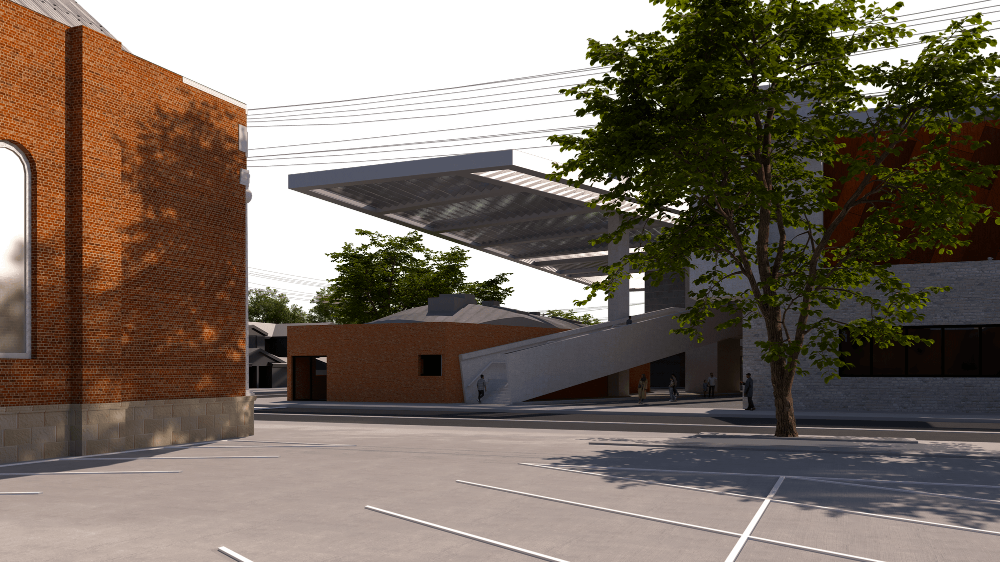
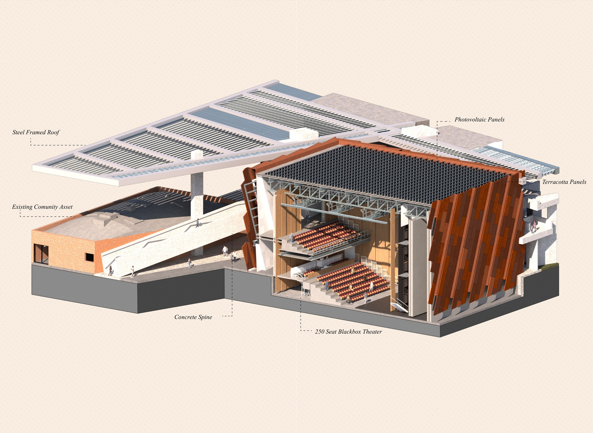
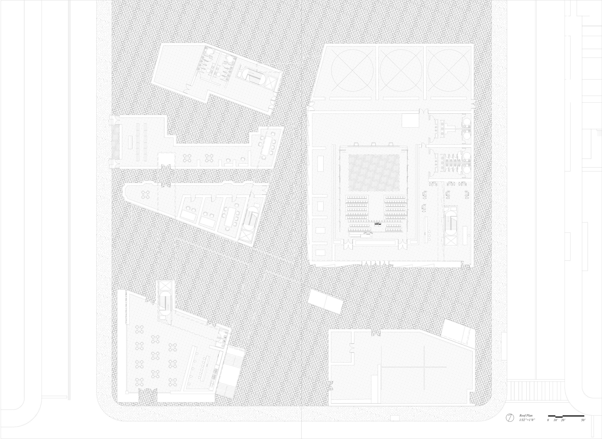
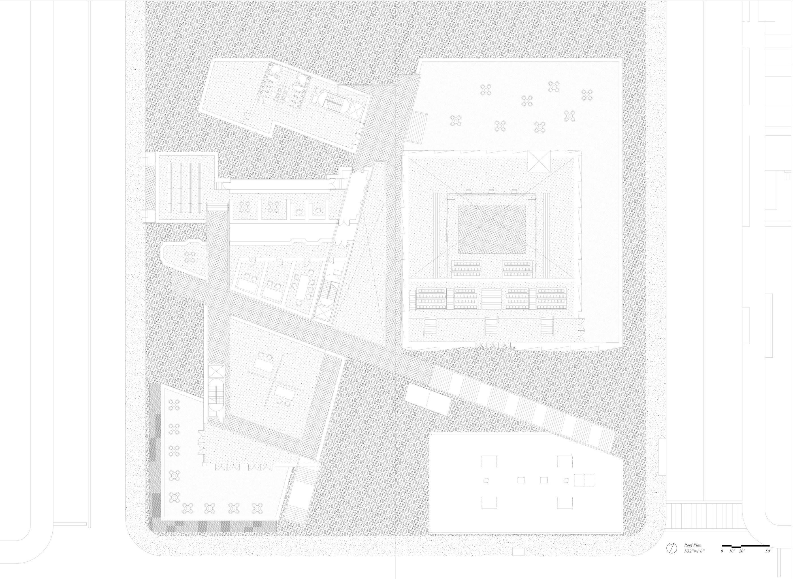
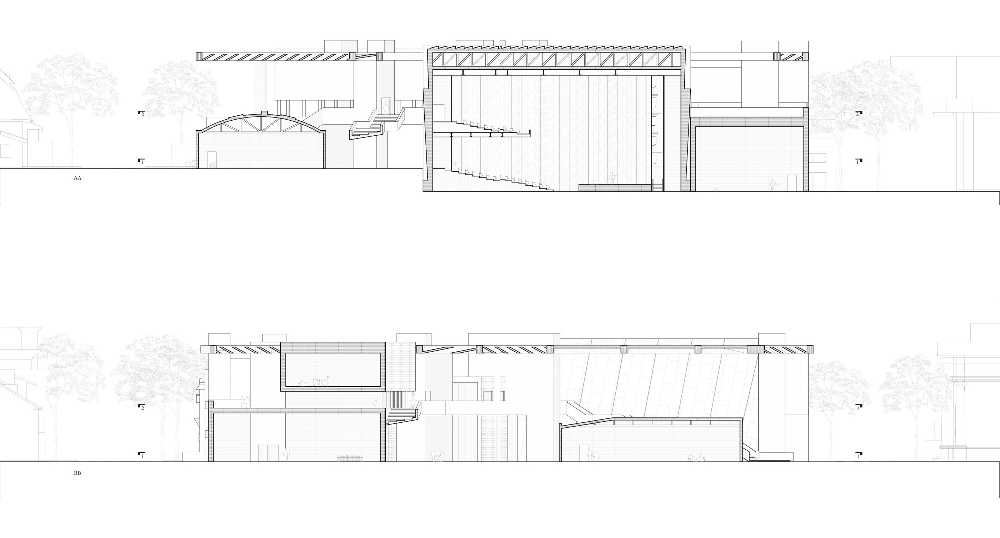
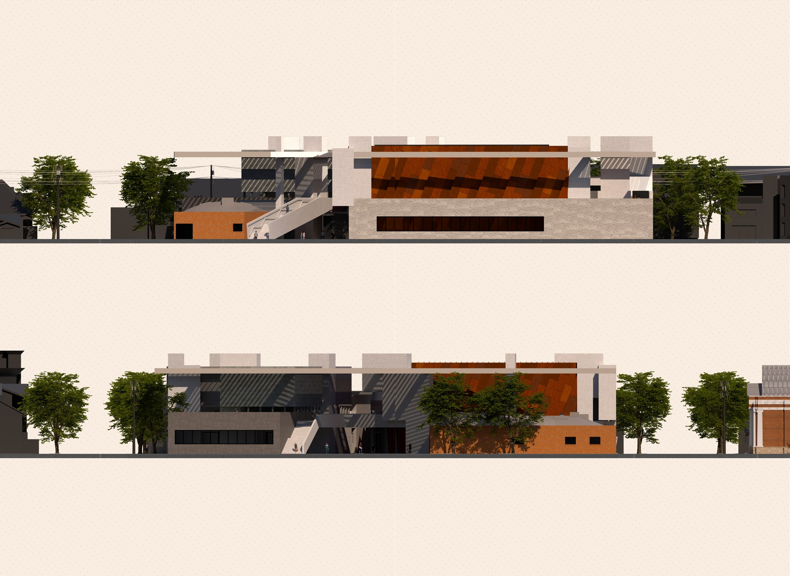
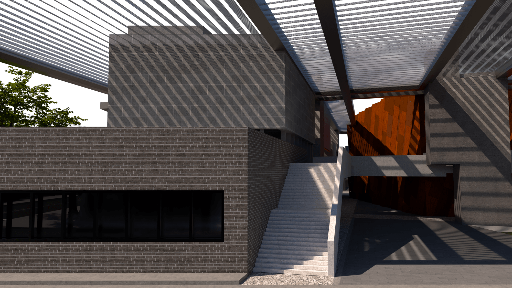
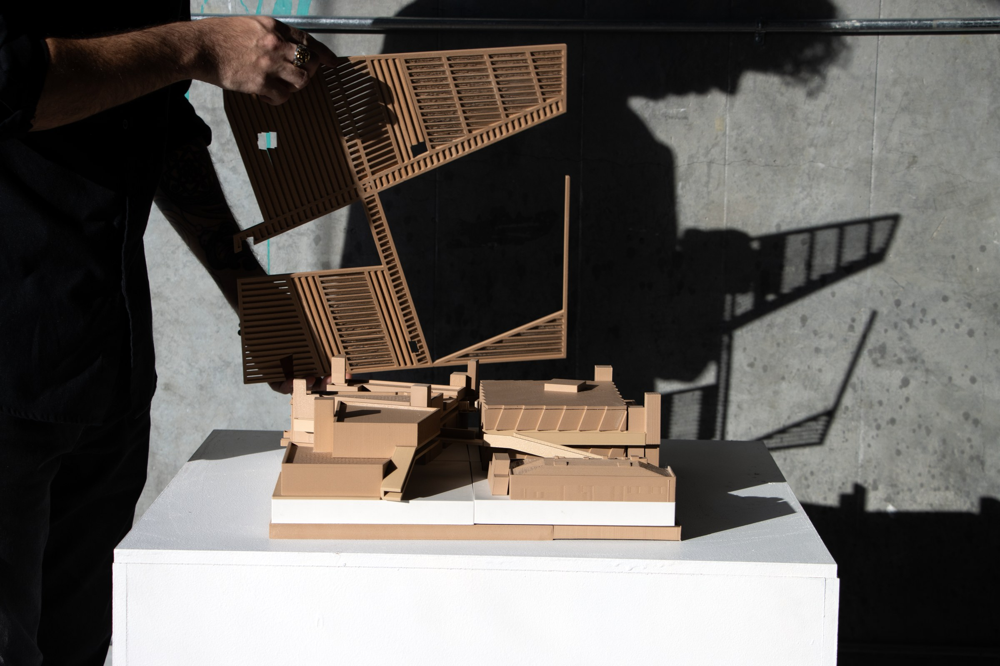
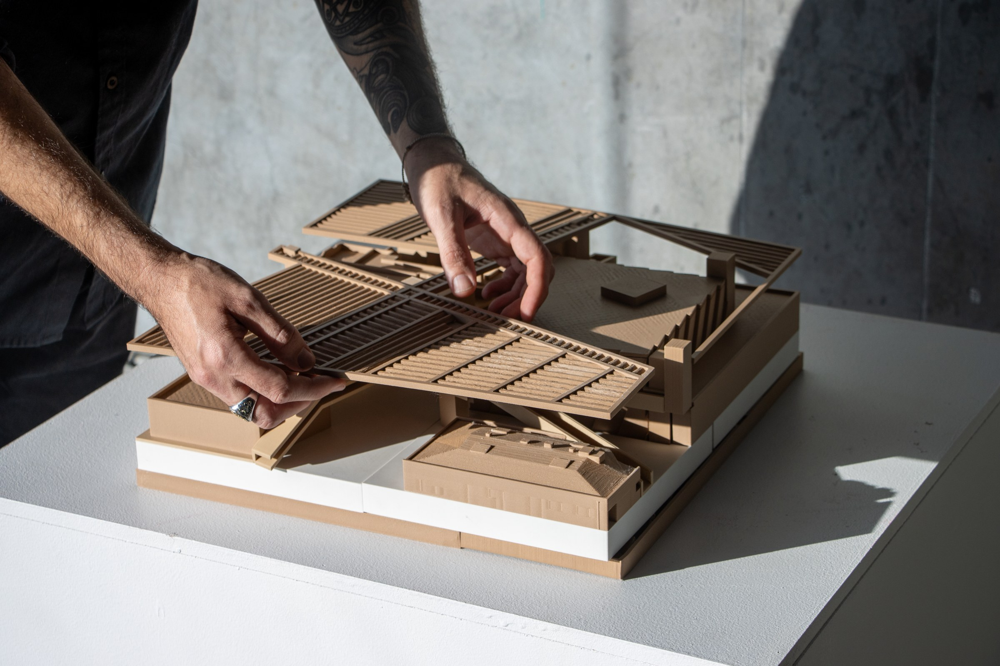

LA Dance Shed
This project for the Los Angeles Dance Project (LADP) seeks to bring the community of Pico-Union together on a campus that serves and connects the community. Located directly across from the Pico-Union Project, the site was surgically opened up in order to connect via sightlines and circulation to this important community asset. A unique goal among this project was to preserve many of the existing structures on the site and repurposing the materials from buildings that were to be removed. With a raised circulatory system, visitors are encouraged to meander throughout the site, engaging with it from within the in-between spaces. The roof serves as not only shade for warm summer days, but also acts as an organizing device for the discrete elements of the site, bringing them together in a collective, just as is intended with the surrounding community.








